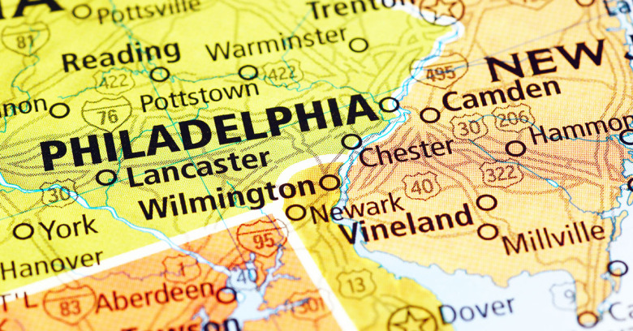

Founded in 1682 by William Penn, Philadelphia is one of the nation's most historic cities. Philadelphia is the home of the liberty bell and the signing of the constitution. Philadelphia has played a role in most notable events when the United State was being founded. The first and second congressional congress ever was held in Philadephia's Carpenters' Hall. You can still view important landmarks and buildings which led to the creation of the United States today.
Many of America's most famous men and women have lived in Philadelphia. Home to George Washington and John Adams during their precidency at Philadelphia's President's House. Benjamin Franklin, one of the Founding Fathers of the United States lived most of his adult life in the city. Franklin started many business and ventures in Philadelphia and had a large part in the signing of the Declaration of Independence. Another notable person from Philadelphia was Betsy Ross who was born and died in Philadelphia. It's theoried that Ross created the first stars and stripes for the flag of the United States.
